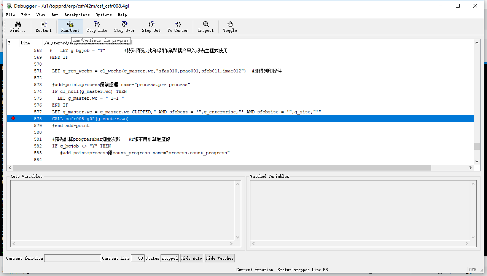

Debug 操作步骤
-
1、打开GDC
2、打开Xshell，选择连接10.10.0.30。输入1后enter选择正式区。输入r.d+空格+需要debug的程式，此处以csfr008为例
、在打开的debug程序中ctrl+F，搜索“_g01”,csfr008为特例需要搜索_g02。在搜索到的代码行双击打断点。
4、点击运行程序，打开T100对应的作业
5、选择或者输入一个或多个料号之后，点击打印
6、到达断点之后点击按钮或者按F11进入function内部
7、在end function之前的CALL其他方法的代码行打上断点

8、点击按钮或者按F10运行至断点处，按F11进入
9、以csfr008为例，进入准备select语句將資料存入array的方法中，运行到prepare开头的代码行，按Ctrl+i，在弹出的窗口中右键拷贝出语句
10、运行至EXCUTE 开头的代码行，Ctrl+i拷贝出之前sql语句中所需参数，将参数代入之前语句运行。